Modular Programming
Modular programming breaks a program down into smaller, reusable sub-programs called modules, making code easier to write, test and maintain. This section covers functions, procedures and parameters, the scope of variables, and how to combine modules into a fully modular program.
- Read, Understand & Explain a Modular Program
- Identify Formal & Actual Parameters
- Identify/Describe/Explain the scope of a variable
- Build a fully modular & maintainable program
- Describe the benefits of Modular Programming
- Multiple developers can work on different modules concurrently (at the same time), speeding up development
- Modules can be tested independently from one another, so it can be easier to pinpoint errors
- Variables used in a module are only in memory while the module is running, making your program more efficient
- Modules can be re-used throughout your program - (think
len()being used throughout your programs at N5) - As each module has one job, it is easier to read and understand what the overall program is doing, and it is easier to find the modules that may need updated.
Key Terms
Functions, Procedures & Parameters
Modular programming means breaking a program down into smaller sub-programs (also called modules). At Higher, there are two types of module: functions and procedures. In Python, these are defined using the def keyword.
Functions
A function is a sub-program that returns a value, so the final line of the function should be a return statement.
def calculateAnswer(): ans = 10 + 5 return ans
To call/run the module above, we use the following code answer = calculateAnswer(). This will run the module, and return the answer of 15, and assign this value to the variable answer.
So our program to create and run the module above would be.
def calculateAnswer(): ans = 10 + 5 return ans answer = calculateAnswer() print(answer)
As the above module returns a value, it is a Function.
Procedures
A procedure is a sub-program that does not return a value. The key difference is the absence of a return statement. Procedures are used when data only needs to flow into the module (for example, to display output).
def add_and_print():
total = 10 + 5
print("The total is", total)
# Main program
add_and_print()
The above procedure, add_and_print, does the same calculation as our function, but does not return the total. Instead it is printed within the procedure. As a result, when we call the procedure, we do not need the variable = part of the call, we can simply use the procedure's name with brackets, add_and_print().
| Procedure | Function | |
|---|---|---|
| Returns a value? | No | Yes — via return |
| Ends with | No return statement | A return statement |
| Used for | Performing an action (e.g. display output/write to file) | Calculating and returning a result |
Parameters
The above examples seem pretty pointless, however once we build in parameters to our modules, they become much more useful
A parameter is a piece of data that is passed into a function or procedure. This can be a static piece of data hardcoded into the program, or a variable. There are two types of parameter: actual and formal.
| Type | Where? | Definition |
|---|---|---|
| Formal parameter | In the def statement (where the module is defined) |
The named placeholder that receives the value. This is the variable name you will use throughout the module. |
| Actual parameter | In the brackets when the module is called - This is normally in the main body of your program. | The real value or variable being passed in |
Let's flesh out the example function & procedure from above. For reference, in the following examples actual parameters will be coloured teal, and formal parameters will be coloured red.
If we take the function calculateAnswer(), in the code below, we will add formal and actual parameters.
# Function definition with formal parameters def calculateAnswer(num1, num2): ans = num1 + num2 return ans # Main program number1 = int(input("Enter number 1: ")) number2 = int(input("Enter number 2: ")) answer = calculateAnswer(number1, number2) print(answer)
Now when the program runs, it takes in 2 variables, number1 and number2 as input, and passes them as actual parameters to the function calculateAnswer(number1, number2).
The function then runs, with the actual parameters now passed to the formal parameters num1 and num2. The parameters are received in the order they are passed in so you must be careful of this.
Once the function completes, the variable ans is returned and assigned to the variable answer in the main part of the program, where it is then printed.
Let's take a quick look at the procedure from above, add_and_print().
def add_and_print(num1, num2): total = num1 + num2 print("The total is", total) # Main program number1 = int(input("Enter number 1: ")) number2 = int(input("Enter number 2: ")) add_and_print(number1, number2)
Similar to the function above, now when the program runs, it takes in 2 variables, number1 and number2 as input, and passes them as actual parameters to the procedure add_and_print(number1, number2).
The procedure then runs, with the actual parameters now passed to the formal parameters num1 and num2. The parameters are received in the order they are passed in so you must be careful of this.
The procedure then prints the "The total is ...", based on the inputs from the user, and the parameters passed to it.
So if the user entered, 35 & 2, the procedure would print The total is 37
A Larger Example
Let's now take a look at a function that uses a find min, and a procedure that prints the answer. We will use a parallel array structure of pupils and marks
| Index | 0 | 1 | 2 | 3 | 4 | 5 | 6 |
|---|---|---|---|---|---|---|---|
| pupils | Pearse | Sophia | Hugh | James | Elise | Iona | Quintin |
| marks | 8 | 10 | 6 | 6 | 9 | 7 | 9 |
First, let's do a generic find min algorithm, this will make it re-usable, which means it can find the min of both the pupil names, and the marks.
def findMin(arrayList):
min = arrayList[0]
pos = 0
for counter in range(len(arrayList)):
if arrayList[counter] < min:
min = arrayList[counter]
pos = counter
return pos
Here we have a function that has 1 formal parameter, arrayList. This could be any single array that is passed to our function findMin(). The function finds the position of the smallest item in the list, and returns this position as pos.
Now let's create a procedure that will print the pupil with the lowest mark.
def displayLowest(pupilNames, pupilMarks, pos): print(pupilNames[pos] + " had the lowest mark of " + pupilMarks[pos])
This procedure has 3 formal parameters pupilNames, pupilMarks & pos. It uses the pos to print the message inside the procedure with the correct name and mark from each of the arrays pupilNames &pupilMarks.
Now let's call these modules:
# Find Min Module def findMin(arrayList): min = arrayList[0] pos = 0 for counter in range(len(arrayList)): if arrayList[counter] < min: min = arrayList[counter] pos = counter return pos def displayLowest(pupilNames, pupilMarks, pos): print(pupilNames[pos] + " had the lowest mark of " + pupilMarks[pos]) # MAIN PROGRAM pupils = ["Pearse", "Sophia", "Hugh", "James", "Elise", "Iona", "Quintin"] marks = [8, 10, 6, 6, 9, 7, 9] # findMin called with 1 actual parameter, the array marks[]. # Pos of smallest mark will be assigned to minPosition minPosition = findMin(marks) # displayLowest called with 3 actual parameters, the arrays pupils[] and marks[], and the variable minPosition # The name and mark of the pupil with the lowest mark will be printed with the message. displayLowest(pupils, marks, minPosition)
The generic find min allows us to easily add a feature that will print the pupil name that is first in alphabetical order
def displayFirstNameInAlphabet(pupilNames, pos): print(pupilNames[pos] + " is the first name in the class in alphabetical order")
We could then just slot this into the program above with another call to findMin(), but this time with pupilNames as the parameter.
# Find Min Module def findMin(arrayList): min = arrayList[0] pos = 0 for counter in range(len(arrayList)): if arrayList[counter] < min: min = arrayList[counter] pos = counter return pos def displayLowest(pupilNames, pupilMarks, pos): print(pupilNames[pos] + " had the lowest mark of " + pupilMarks[pos]) def displayFirstNameInAlphabet(pupilNames, pos): print(pupilNames[pos] + " is the first name in the class in alphabetical order") # MAIN PROGRAM pupils = ["Pearse", "Sophia", "Hugh", "James", "Elise", "Iona", "Quintin"] marks = [8, 10, 6, 6, 9, 7, 9] # findMin called with 1 actual parameter, the array marks[]. # Pos of smallest mark will be assigned to minPosition minPosition = findMin(marks) # displayLowest called with 3 actual parameters, the arrays pupils[] and marks[], and the variable minPosition # The name and mark of the pupil with the lowest mark will be printed with the message. displayLowest(pupils, marks, minPosition) # Re-using find Min to find smallest Name minNamePos = findMin(pupils) displayFirstNameInAlphabet(pupils, minNamePos)
- Functions & Procedures can be re-used multiple times throughout the program.
- Different developers can work on different modules at the same time, speeding up development.
- Modules can be tested independently of one another, making it easier to identify errors within a module, rather than the whole program.
Functions, Procedures & Parameters — Video Explanation
Practice Questions - Identify Parameters
The following questions will show you how to:
- Identify Formal & Actual parameters
- Describe how Formal & Actual parameters are used
Question 1
The most common parameter question, is to identify a formal & actual parameter. The following code was used in the Past Paper for 2023, Question 9.
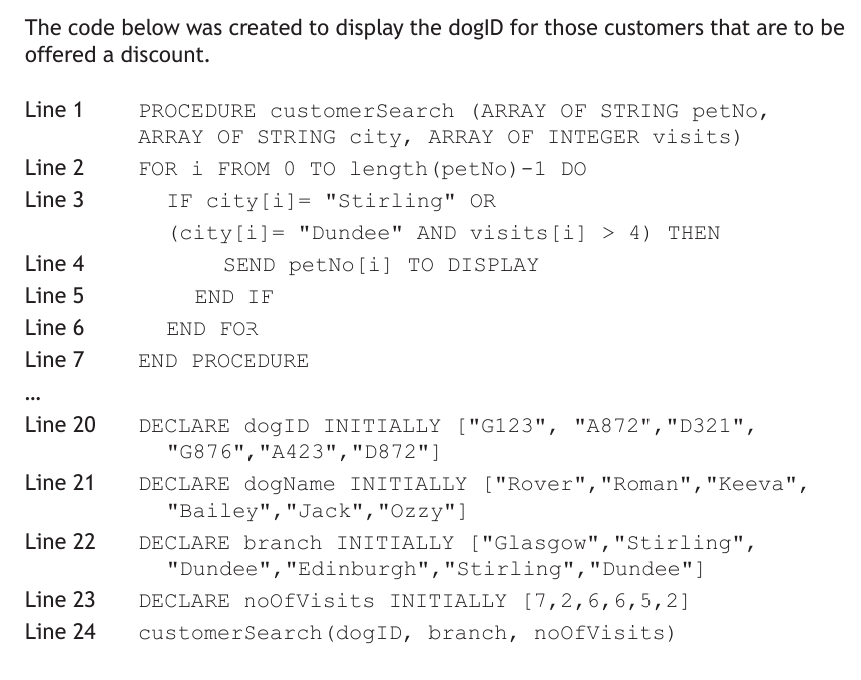
We are answering part b
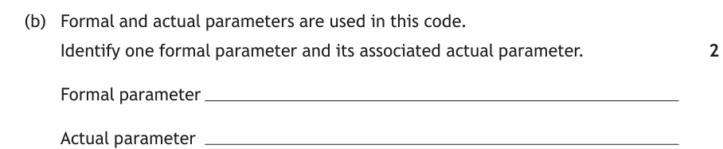
To answer these questions, follow this process.
Step 1: Look for the module definition
I can see on Line 1 that this is a procedure with the name customerSearch. That means from Line 1 to the ... will be my module code.
Step 2: Identify the formal parameters
Now I know that the procedure definition starts on line 1, I can look for the formal parameters inside the () of the definition.
Don't be thrown off by the ARRAY OF STRING, and ARRAY OF INTEGER data types, we are just looking for the parameter names. They are:
- petNo
- city
- visits
We can select any 1 of these as our formal parameter answer. This would gain 1 Mark.
Step 3: Identify the actual parameter
Now we need to identify the Actual Parameters. To do this, let's look for the Procedure call in the main block of the program.
We can see based on the ..., that the procedure definition ends on Line 7, and the main program block begins on Line 20. We can start looking here for the procedure customerSearch() being called.
If we look at Line 24, we can see the procedure name in the main program block, with 3 parameters. As this is the procedure being called, this makes these parameters, Actual Parameters.
So the Actual Parameters are:
- dogID
- branch
- noOfVisits
Now, as the question says, Identify one formal parameter and its associated actual parameter, I can't just pick any of the 3. I must pick the one that corresponds with my selection of formal parameter.
The acceptable pairs are:
- petNo -> dogID
- city -> branch
- visits -> noOfVisits
A correct formal Parameter gains 1 Mark, and its associated actual parameter gains the 2nd Mark.
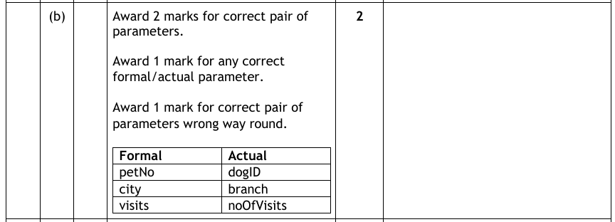
Question 2
This type of question requires a bit more than just identification, although if you do correctly identify the parameters and put it into a sentence, you can get 2 out of 3.
The Description of Parameter Passing appears more infrequently, but can easily throw candidates off by seeming more complex than it actually is.
The code for 2018 Question 15 is:
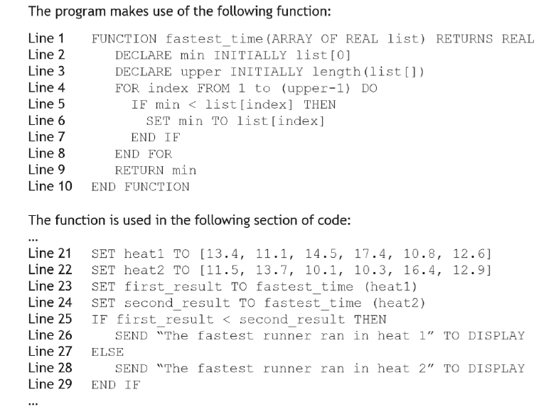
We are answering part b
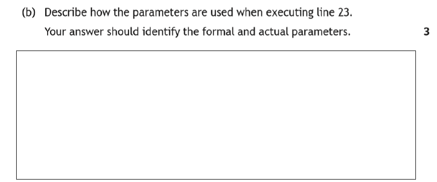
To answer these questions, follow this process.
Step 1: Look for the module definition
I can see on Line 1 that this is a function with the name fastest_time. That means from Line 1 to the ... will be my module code.
Step 2: Identify the formal parameters
Now I know that the function definition starts on line 1, I can look for the formal parameters inside the () of the definition.
Don't be thrown off by the ARRAY OF REAL data type, we are just looking for the parameter names.
This time, there is only 1, and it islist.
Step 3: Identify the actual parameter
Now we need to identify the Actual Parameters. To do this, let's look for the Function call in the main block of the program.
We can see based on the ..., that the function definition ends on Line 10, and the main program block begins on Line 21. We can start looking here for the function fastest_time() being called.
If we look at Line 23 & Line 24, we can see the function name in the main program block appear twice, with a different parameter on each line. As this is the function being called, this makes these parameters, Actual Parameters.
So the Actual Parameters are:
- heat1
- heat2
Step 4: How do I fit these parameters into a description?
Now, as the question says, Describe how the parameters are used when executing line 23. Your answer should identify the formal and actual parameters., I need to figure out how to describe the use of the parameters, specifically on Line 23.
So let's start there. Line 23 is SET first_result TO fastest_time(heat1). As we identified, the parameter here is heat1 and it is being passed to the function fastest_time(), so let's start with that
The actual parameter heat1 is passed to the function fastest_time().
So what happens next, the function fastest_time starts running. Remember we are being asked to describe how the parameters are being used, so our answer only relates to this. Once the function starts running, our actual parameter becomes the formal parameter, which we already identified as list. That should make the next part of my answer.
When the function fastest_time() starts running on line 23, the actual parameter heat1, becomes the formal parameter list.
I have now correctly identified the formal and actual parameters in a description answer, but that only gets me 2 out of 3, 1 for each parameter identification. The final mark is awarded for displaying knowledge about how a parameter actually works, as the formal is just a place holder pointing at the actual parameter.
So the final part of the answer is:
While the function runs, the formal parameter list is a pointer to the address of the actual parameter, it doesn't contain the actual values.
That final sentence would gain the final of the 3 marks.
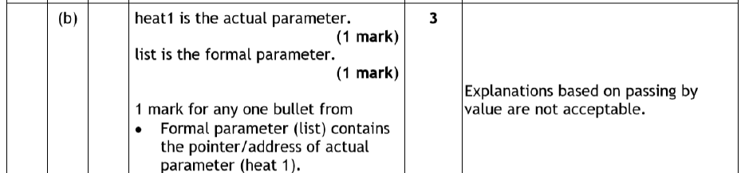
So the full answer would be:
The actual parameter heat1 is passed to the function fastest_time(). When the function fastest_time() starts running on line 23, the actual parameter heat1, becomes the formal parameter list. While the function runs, the formal parameter list is a pointer to the address of the actual parameter, it doesn't contain the actual values.
Scope of Variables
The scope of a variable determines where in a program it can be used. Variables are either global or local.
Global Variables
Global variables can be used anywhere in the program. They are declared in the main program, outside any function block (with no indentation).
username = "admin" scores = [22, 5, 10, 18, 9] def login(): enteredUserName = input("enter your username: ") if enteredUserName == username: print("You are now logged in and can view the scores") else: print("invalid username")
In the example above, username is declared in the main part of the program (no indentation), and as such can be used in the main block, or in any module that is created. We can see username used in the login() procedure.
Global variables should not be over-used — they stay in memory for longer than necessary, which is less efficient and increases the risk of errors.
Local Variables
Local variables can only be used in the block of code in which they are declared (for example, in a single function or procedure). In the example below, total is local to the function and cannot be accessed outside it.
def myfunction(param1, param2): total = param1 + param2 return total number1 = 5 number2 = myfunction(number1, 6)
If we attempted to use total in the main block of code, our program would crash with total not defined.
- They are released from memory when no longer needed, so they free up resources.
- The same name can be re-used in different parts of the program without the variables interfering with each other.
- You cannot accidentally affect another part of the program, which avoids logic errors.
Making a Global Variable Accessible
The following information is python specific and does not apply to the exam. All you have to know for the exam is in the above section.
Using the global keyword allows a function to reference and change a program-level (global) variable.
total = 0 def myfunction(param1, param2): global total total = param1 + param2 return total
# Find Max Algorithm
def findMax(list):
max = list[0]
for counter in range(len(list)):
if list[counter] > max:
max = list[counter]
return max
# Declare an array of floats to store a list of BMIs
bmis = [22.3, 26.3, 33.22, 21.22, 17.23]
heaviest = findMax(bmis)
Here max and list are local (function-scoped), while bmis and heaviest are global (declared in the main program).
Scope of Variables — Video Explanation
Practice Questions - Variable Scope
The following 3 questions are all part of 2023 part d), and will go through scope from identification, to description and the explanation of benefits. Essentially, nearly everything you could be asked in an exam.
Question 1
This is the same overall question as practice question 1 from the above section on parameters.
As a reminder, the code we are being asked about is:
We are answering part d) (i)
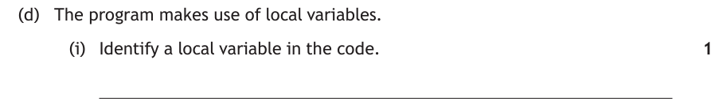
Here, we are being asked to Identify a variable with a local scope.
As we are identifying a local variable, we need to look for one that is declared in the procedure.
As we did in practice question 1 from the parameters section, we know that the procedure code runs from line 1 to line 7. We need to look in here for a variable that is declared.
Unfortunately, there are none that are declared, there are only the formal parameters. However, formal parameters can only be used in the module that they are defined in, so they count as Local Variables.
That means we have 3 options:
- petNo
- city
- visits
The marking instructions are:
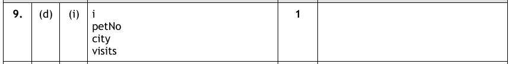
Technically, the loop counter used in the procedure also counts as a local variable, as it can only be used within the procedure as well.
For reference, the Global variables are: dogID, dogName, branch & noOfVisits as these are declared in the main program block and can be used anywhere in the program.
Question 2
This is the same overall question as practice question 1.
As a reminder, the code we are being asked about is:
We are answering part d) (ii)
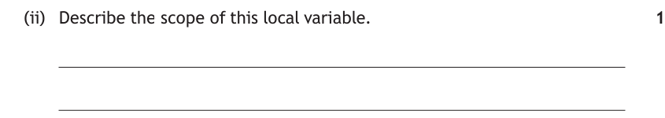
Here, we are being asked to Describe the scope of the local variable from part (i).
Now, we have identified that the Local variables are:
- petNo
- city
- visits
So let's pick, petNo. Although this could apply to any of the 3.
To describe the scope, is to describe where it can be used, so to answer this question, we just need to say where our chosen local variable can be used. We know that it can be used in the procedure as it is local, but not in the main program block on lines 20 to 24. So all we need to say is:
The variable petNo is local as it can only be used in the customerSearch procedure.
You could also quote line numbers (1 to 7 to be more specific)
The marking instructions are below:
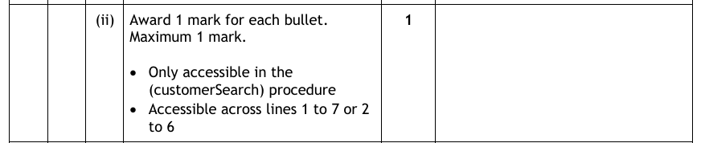
Question 3
This is the same overall question as practice question 1 & 2.
As a reminder, the code we are being asked about is:
We are answering part d) (iii)
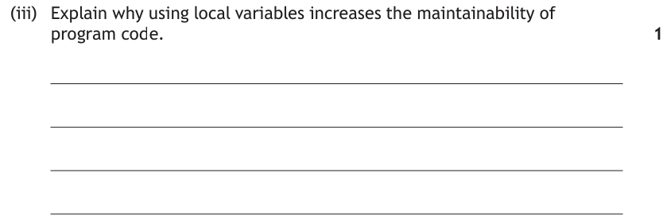
Here, we are being asked to Explain why local variables make a program more maintainable.
Remember, maintainability means: how easily another programmer can understand the code and make changes to it with minimum difficulty. Things like meaningful variable names, indentation, internal commentary and splitting the program into modules all make a program more maintainable.
So essentially, we are being asked about the benefits of modular programming, specifically relating to local variables & maintainability.
So let's refresh our memory on the benefits related to variable scope and try to identify which relate to maintainability.
- They are released from memory when no longer needed, so they free up resources. - Talking about memory usage, so not maintainable, but a good answer if asked about efficiency ❌
- The same name can be re-used in different parts of the program without the variables interfering with each other. - talks about variable naming, this is covered by maintainability - ✅
- You cannot accidentally affect another part of the program, which avoids logic errors. - removing possibility of accidental errors is covered by maintainability, as without these it will be easier to maintain - ✅
So, as it is 1 mark, we can pick either advantage 2 or 3 from the above options. Remember the question is asking about maintainability, not efficiency, this changes our answer.
As this is an Explain question, we can't simply state a fact and get the mark, you need to clearly demonstrate the advantage in terms of maintainability:
If you have multiple modules that have local variables with the same names, updating 1 module won't affect the others.
or:
Using more local variables means less reliance on global variables, which reduces the chance of accidentally updating a global variable in a module.
The marking instructions are below:
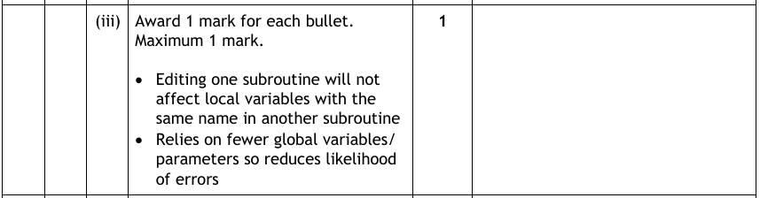
Other types of questions you could get are:
- State the scope of the variable [variableName from code]
- Describe what is meant by the scope of a variable
- Explain why local variables are more efficient than using global
Fully Modular Program
Here is a complete, fully modular program. It reads a list of one hundred countries from a text file, asks the user to enter a capital letter (validating the input), then counts how many countries begin with that letter.
Module Design
| Module | Type | Purpose |
|---|---|---|
get_countries | Function | Returns the array of countries read from the file |
get_letter | Function | Returns a validated capital letter entered by the user |
count_countries | Function | Takes two parameters, returns the count of matches |
show_result | Procedure | Takes the count parameter, displays it (no return value) |
Module Skeleton and Main Algorithm
def get_countries():
...
return countries
def get_letter():
...
return letter
def count_countries(countries, letter):
...
return count
def show_result(count):
print("...")
# Main algorithm
c = get_countries()
l = get_letter()
count = count_countries(c, l)
show_result(count)
Complete Working Program
def get_countries():
file = open("countries.txt", "r")
countries = file.readlines()
file.close()
return countries
def get_letter():
letter = input("Please enter a capital letter:")
while len(letter) != 1 or (ord(letter) < 65 or ord(letter) > 90):
print("Error: input is not valid")
letter = input("Please enter a capital letter:")
return letter
def count_countries(countries, letter):
count = 0
for index in range(0, len(countries)):
first_letter = countries[index][0:1]
if letter == first_letter:
count = count + 1
return count
def show_result(count):
print("Matches found:", count)
c = get_countries()
l = get_letter()
count = count_countries(c, l)
show_result(count)
Fully Modular Program — Video Explanation
Benefits of Modular Programming
Breaking a program into modules has a number of important advantages:
- Team working — multiple developers can work on different modules (parts of the project) at the same time.
- Independent testing — each module can be tested on its own, which makes errors far easier to locate and fix.
- Efficient use of memory — local variables are only held in memory while their module is running, then released, so resources are freed up.
- Fewer errors from variable scope — because modules mainly use local variables, one module is far less likely to accidentally change data belonging to another.
- Reusability — a well-written module can be reused in other programs without being rewritten.
- Readability and maintenance — each module does one clear job, so the program is easier to read, understand and update later.
Benefits of Modular Programming — Video Explanation